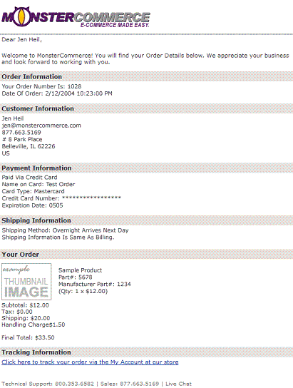

FORMAT OF EMAIL (ĐỊNH DẠNG CỦA EMAIL)
Các bạn cũng biết rằng có rất nhiều chương trình phần mềm khác nhau được dùng để đọc thư điện tử. Chính vì vậy việc phần e-mail bạn gửi đi nhìn không giống phần bạn soạn ở máy của bạn là điều có thể xảy ra. Chính vì vậy các bạn phải thật cẩn thận khi chọn phần soạn thảo e-mail. Bài giảng dưới đây sẽ thảo luận về những vấn đề nảy sinh từ sự không tương thích giữa phần mềm gửi và nhận e-mail cũng như đưa ra cho các bạn cách phòng tránh.
FANCY TEXT (LOẠN CHỮ)
Một số phần mềm đọc e-mail chỉ có thể hiểu được những dạng chữ thường không có code. Những phần chữ in nghiêng, bôi đen hay có màu thường bị biến đổi.
Các bạn hãy quan sát ví dụ sau. Có thể các bạn muốn gửi một bức thư điện tử với nội dung như sau:
| Hiya! Hey, I loved the presentation you gave to Jack this morning. Great Job! |
Tuy nhiên, nếu phần mềm đọc thư của người nhận không thể đọc được những phần định dạng trên, rất có thể bức thư của bạn sẽ được xuất hiện trên máy của họ như sau:
| Hiya! Hey, I <I>loved<I> the presentation you gave to Jack this morning. <B>Great Job!<B> |
WEB LINKS (LINKS CỦA TRANG WEB)
Một số phần mềm đọc e-mail sẽ nhận diện được URLs (Uniform Resource Locators, hoặc địa chỉ trang web) ở dạng text và để chúng "live" (bạn chỉ cần click vao link là có thể truy cập vào trang web đó). Bên cạnh đó, một số phần mềm nhận URLs từ phần "www.", tuy nhiên hầu hết những phần mềm đọc e-mail đều nhận URLs với phần "http://" ở đầu.
Chính vì vậy, nếu e-mail của bạn có chứa URL tốt hơn hết là bạn hãy bao gồm phần "http://" ở đầu, như vậy sẽ an toàn hơn và đảm bảo khả năng mở được URL của người nhận e-mail.
Ngoài ra các bạn cũng nên cẩn thận khi sử dụng dấu câu, đặc biệt là dấu chấm câu ngay đằng sau phần URL.
Ví dụ, khi các bạn gửi một bức e-mail có nội dung như sau:
| Hi - The URL is http://www.webfoot.com/writings.html. See if you like it! |
Nếu như vậy, phần mềm đọc e-mail ở máy người nhận sẽ nghĩ rằng dấu chấm câu ở sau phần URL là một bộ phận của URL đó và links sẽ không chính xác khiến người nhận không thể truy cập được.
Trong trường hợp đó người nhận sẽ phải cut-và-paste rất nhiều lần để có thể vào được trang web ấy. Cả hai trường hợp trên đều khiến cho việc trao đổi e-mail giữa bạn và người nhận trở nên căng thẳng. Bởi người nhận có thể khăng khăng rằng trang web đó không tồn tại còn bạn thì khẳng định nó có tồn tại.
Cách trình bày sau đây có thể khiến
bức e-mail của bạn không đẹp lắm, những có một điều chắc chắn đó là nó sẽ ít gây ra sự mập mờ. Rất đơn giản, các bạn chỉ cần để ít nhất một chỗ cách ngay sau phần URL sau đó mới đặt dấu chấm câu. Các bạn hãy quan sát ở ví dụ dưới đây:
| Hi - The URL is http://www.webfoot.com/writings.html . See if you like it! |
Ngoài ra, người nhận e-mail cũng thường chọn cut và paste không đủ nên không thể đăng nhập được hoặc phải thử nhiều lần mới được.
Bên cạnh đó vì phần nối của file HTML có thể là .html hoặc .htm, nên điều đó có thể gây khó khăn cho người nhận trong việc nhận biết. Chính vì vậy để có thể giúp người nhận chọn phần cut-và-paste một cách dễ dàng, các bạn nên để phần URLs ở một dòng riêng.
Ví dụ:
| Hi - The URL is http://www.webfoot.com/writings.html See if you like it! |
Tuy nhiên, nếu trình bày như vậy sẽ bỏ mất dấu chấm đằng sau phần URL. Điều đó sẽ dẫn đến việc sai ngữ pháp và chắc chắn các bạn cũng không muốn đặt dấu chấm câu ở dòng tiếp theo. Chính vì vậy, trong trường hợp này các bạn nên đánh đổi việc sử dụng đúng ngữ pháp lấy việc lựa chọn cut-và-paste địa chỉ trang web dễ dàng và tiện lợi.
Với những trường hợp URLs quá dài các bạn nên tách chúng thành hai dòng.
Ví dụ:
| Hi - The URL is http://www.webfoot.com/advice/translations/indonesian/email. formality.html See if you like it! |
Tuy nhiên, nếu phần mềm đọc e-mail ở máy người nhận để links của trang web "live", nó có thể sẽ không nhận diện được phần formality.html mà nghĩ rằng phần đó không thuộc URL và làm họ không vào được hoặc vào sai phần ở trang web được gửi.
Ví dụ:
| Hi - The URL is http://www.webfoot.com/advice/translations/indonesian/email. formality.html See if you like it! |
Trong trường hợp, người nhận thư điện tử lựa chọn việc cut và past địa chỉ web, họ có thể sẽ không để ý đến phần cuối dẫn đến việc links sẽ bị thiếu.
Chính vì vậy khi địa chỉ web quá dài các bạn có thể tách chúng thành 2 dòng và đặt dấu ngoặc nhọn bao quanh phần links đó. Một số phần mềm đọc e-mail sẽ nhận biết được rằng những phần ở bên trong dấu ngoặc nhọn sẽ đi cùng với nhau.
Ví dụ:
| Hi - The URL is <http://www.webfoot.com/advice/translations/indonesian/email. formality.html> See if you like it! |
PUNCTUATION & QUOTATION MARKS
Điều khá phổ biến trong những quy tắc về sử dụng dấu câu của Hoa Kỳ đó là dấu chấm sẽ nằm ở bên trong dấu ngoặc kép.
Ví dụ: |
|
| Bob said, "I love you madly." |
Điều đó sẽ rất bình thường trong những trường hợp viết thư tay trên giấy. Tuy nhiên, khi soạn e-mail bằng máy tính để đưa ra khẩu lệnh cho người nhận thư, điều đó sẽ gây trở ngại.
Các bạn hãy cân nhắc trường hợp sau:
Nếu các bạn điền vào phần khẩu lệnh từ "smiley." Theo bạn thì dấu chấm câu sẽ được đi kèm cùng phần khẩu lệnh hay không? Tất nhiên là sẽ đi cùng và làm sai lệnh thông tin người gửi e-mail muốn truyền tải. Chính vì vậy, trong trường hợp này chúng ta hãy tuân thủ theo quy tắc ngữ pháp về dấu câu của Anh và gõ thành "smiley". Điều đó sẽ đảm bảo rằng dấu chấm câu sẽ không bị dính liền cùng phần khẩu lệnh
ATTACHMENTS (FILE ĐÍNH KÈM)
Một số người thường gửi file đính kèm cũng với e-mail để cung cấp thêm tư liệu cho người nhận. Ưu điểm lớn nhất của file đính kèm là có thể giữ nguyên định dạng ban đầu giúp người gửi có thể sử dụng nhiều loại định dạng. GIF-encoded images, JPEG-encoded images, Word documents, WordPerfect documents, Photoshop files, Excel spreadsheets, và một số loại file khác là những dạng tư liệu có thể gửi kèm qua e-mail.
Nếu như người nhận e-mail có thể nhận được file đính kèm và có phần cài đặt để đọc file đó thì không vấn đề gì. Tuy nhiên, trong trường hợp phần mềm đọc e-mail không nhận dạng được phần file đính kèm và hiện lên một file loạn phông chữ và định dạng thì các bạn hãy bình tĩnh. Và các bạn hãy lưu ý rằng luôn có những phần mềm để đọc những file đính kèm đó. Chính vì vậy các bạn hãy download trên mạng những phần mềm tương ứng với file gửi kèm để đọc. Ngoài ra, các bạn cũng có thể yêu cầu người gửi e-mail gửi kèm cho bạn phần cài đặt để đọc file gửi kèm đó.
SUMMARY (TÓM TẮT)
Nếu các bạn không biết cụ thể phần mềm đọc e-mail của người nhận là phần mềm nào và những tính năng của nó, các bạn hãy làm theo những gợi ý sau để đảm bảo e-mail của bạn có thể được đọc một cách thuận lợi, dễ dàng.
| * Không sử dụng phần định dạng lạ (ngay cả bôi đen hoặc in nghiêng) | |
| * Nhận biết rõ những loại kỹ tự, chữ đặc biệt | |
| * Gửi tên trang web dưới dạng text | |
| * Hãy gõ http:// trước phần URLs bạn gửi | |
| * Hãy cẩn trọng với những file gửi kèm |
PAGE LAYOUT (CÁCH BỐ TRÍ, SẮP XẾP)
Phần Words ở trên máy tính nhìn sẽ khác so với phần bạn viết trên giấy, và thông thường mọi người thấy khó đọc trên màn hình máy vi tính hơn là trên giấy. Bởi đọc qua máy tính thường khó nhìn hơn và thậm chí nếu đọc lâu còn có thể bị đau mắt, đau đầu. Chính vì vậy, một số người còn in phần e-mail mà họ nhận được ra để đọc trên giấy.
Tuy nhiên, vì sự tiện lợi của mình nên e-mail vẫn hết sức phổ biến nhưng được lưu ý nhiều về mặt font
chữ, cỡ chữ làm sao cho người nhận cảm thấy dễ chịu nhất khi đọc bức e-mail các bạn gửi.
Ngoài ra, các bạn hãy lưu ý rằng cách bố trí, sắp xếp e-mail sẽ khác xa so với việc bố trí một bức thư tay thông thường.
SHORTER PARAGRAPHS (TÁCH NGẮN ĐOẠN VĂN)
Thông thường những bưc thư điện tử sẽ được đọc qua màn hình của máy vi tính với giới hạn nhất định. Và với sự hạn chế như vậy, một đoạn văn dài gây khó khăn cho người nhận khi đọc. Chính vì vậy những chuyên gia trong lĩnh vực này đã khuyên chúng ta nên tách một đoạn văn thành những phần nhỏ, gồm một vài câu.
LINE LENGTH (CHIỀU DÀI CỦA HÀNG, DÒNG)
Trước tiên, các bạn hãy thử tưởng tượng xem nếu mình nhận được một bức thư điện tử trong đó có một dòng như sau:
"
I've got the price quote for the Cobra subassembly ready; as soon as I get a decision on the thromblemeister selection, I'll be ready to go. Have you talked to the thermo guys about whether they are ready to go with the left-handed thrombo or do they want to wait and check out the right-handed one first?"
Cả một phần dài như vậy chỉ nằm trên một dòng, quả thực gây khó khăn rất nhiều cho người đọc.
Hơn thế nữa, nếu một dòng có nhiều hơn 76 ký tự, phềm mềm soạn e-mail sẽ tự động tách dòng ở ký tự thứ 75 và kết thúc dòng bằng dấu =. Người nhận e-mail khi đọc được phần nội dung, tư liệu ấy vẫn có thể hiểu được. Tuy nhiên, bức thư điện tử của các bạn nhìn sẽ thiếu mỹ quan và gây ức chế cho người đọc.
Các bạn hãy quan sát ví dụ sau để thấy rõ:
| I've got the price quote for the Cobra subassemby ready; as soon as I get a= | |
| decision on the thromblemeister selection, I'll be ready to go. Have you= | |
| talked to the thermo guys about whether they are ready to go with the= | |
| left-handed thrombo or do they want to wait and check out the right-handed= | |
| one first? |
Chính vì vậy các bạn hãy cố gắng để độ dài của hàng, dòng dưới 70 ký tự. Đọc đến phần này, có lẽ các bạn sẽ thắc mắc tại sao là 70 ký tự mà không phải là 76 ký tự vì phần giới hạn cho phép là 76 ký tự. Câu trả lời là bởi các bạn nên để một khoảng trống cho phần thụt vào hoặc trích dẫn để người nhận thư điện tử có thể sử dụng, trích dẫn một phần nội dung bài viết của bạn để trả lời.
TERSER PROSE (BÀI NGẮN)
Bạn có nhớ mình đã được yêu cầu viết bao nhiêu bài tiểu luận 20 trang không? Có lẽ là rất nhiều, đến nỗi bạn không thể nhớ nổi. Và trong những trường hợp bài viết của bạn ngắn, không đủ số trang yêu cầu bạn có thể sẽ bị phạt, trừ điểm. tuy nhiên điều đó hoàn toàn khác biệt với e-mail.
Nguyên tắc quan trọng khi viết e-mail đó là hãy viết thật ngắn gọn. Nếu như người nhận muốn biết thêm thông tin họ sẽ yêu cầu bạn trả lời sau hoặc gửi file kèm theo.
Nếu các bạn gửi một bản báo cáo cho nhiều người cùng lúc thì lúc đó bạn nên viết chi tiết để tránh tình trạng phải trả lời quá nhiều câu hỏi của những người trong danh sách bạn gửi. Ngoài ra, trước khi cho một số lượng lớn người nhận bạn nên cân nhắc kỹ lưỡng xem có cần thiết
đưa ai đó vào danh sách gửi không.
Thông thường, một quyển sách viết cho hàng nghìn người thì sẽ dày hàng chục nghìn trang. Một bài diễn thuyết trước một nhóm người đông thì sẽ gồm hàng nghìn từ. Tương tự như vậy, số lượng người trong danh sách gửi càng ít thì phần nội dung của bức thư điện tử càng ngắn.
Chính vì vậy, các bạn hãy cố gắng để phần nội dung bức thư điện tử của mình chỉ dài một trang, điều đó cũng có nghĩa là 25 dòng của text.
SUMMARY (TÓM TẮT)
Nói tóm lại các bạn hãy để tất cả mọi thứ trong phần thư điện tử của mình thật ngắn ngọn.
| * Hãy viết dòng ngắn | |
| * Hãy viết đoạn ngắn | |
| * Hãy viết bài ngắn |
INTONATION OF E-MAIL (NGỮ ĐIỆU CỦA E-MAIL)
Điều khó có thể truyền đạt nhất qua e-mail chính là cảm xúc. Mọi người thường gặp khó khăn trong việc gõ chính xác những điều họ muốn nói ra. Nhưng đáng tiếc là nếu không có ngữ điệu để biểu thị tình cảm thì rất dễ biểu thị sai ý định của họ.
Nếu các bạn không thể chuyển ngữ điệu của mình cao hay thấp, mềm hay cứng để nhấn mạnh thì phần nội dung bức thư điện tử của các bạn rất khó thể hiện được cảm xúc bạn muốn truyền đạt.
Chính vì vậy khi viết e-mail các bạn hãy cố gắng nhấn mạnh để thể hiện cảm xúc của mình.
LIGHT EMPHASIS (NHẤN MẠNH NHẸ NHÀNG)
Nếu các bạn muốn đưa ra một số phần để nhấn mạnh nhẹ nhàng thì các bạn nên đánh dấu sao vào những phần đó. Điều đó cũng tương đương với phần in nghiêng trong tài liệu.
Chính vì vậy,
| Thay vì nói rằng: | |
| I said that I was going to go last Thursday. | |
| Các bạn hãy nói: | |
| I *said* that I was going to go last Thursday. | |
| Hoặc: | I said that I was going to to go last *Thursday*. |
| While Bob may say that you should never turn it past nine, this is not Cast In Stone. It will explode if you turn it up to eleven, but anything under ten should work just fine. |
STRONG EMPHASIS (NHẤN MẠNH RÕ RÀNG)
Nếu các bạn muốn nhấn mạnh rõ ràng các bạn hãy viết hoa tất cả các chữ cái và sử dụng thêm dấu chấm cảm.
| Thay vì nói rằng: | |
| > Should I just boost the power on the thrombo? | |
| No, if you turn it up to eleven, you'll overheat the motors and it might explode. |
|
| Các bạn hãy nói: | |
| > Should I just boost the power on the thrombo? | |
| NO!!!! If you turn it up to eleven, you'll overheat the motors and IT MIGHT EXPLODE!! |
Tuy nhiên, các bạn hãy lưu ý rằng chỉ nên sử dụng phương pháp viết hoa toàn bộ từ đúng lúc, đúng cách. Đừng nên quá lạm dụng như ví dụ dưới đây:
| HEY, I JUST WANTED TO SEE IF YOU HAD MADE ANY PROGRESS ON THE PHROCKMEIJER ACCOUNT. STOP BY AND SEE ME SOMETIME. |
Người nhận thư điện tử sẽ thấy hết sức khó chịu khi đọc bức e-mail như vậy.
>>EXTREME!!<< EMPHASIS (NHẤN MẠNH CẤP ĐỘ CAO)
Nếu bạn thực sự muốn nhấn mạnh điều gì đó ở cấp độ cao. Bạn có thể dùng cách này:
| If you are late this time, I swear upon my mother's grave that I will never, *never*, *NEVER*, >>!!**NEVER**!!<< talk to you again. |
Tuy nhiên các bạn hãy sử dụng phần nhấn mạnh này một cách có giới hạn, không nên lạm dụng quá.
MUTTER EQUIVALENTS (TƯƠNG ĐƯƠNG VỚI PHẦN NÓI THẦM)
Khi nói chuyện trực tiếp, các bạn có thể có rất nhiều cách để biểu thị cuộc nói chuyện đó là riêng tư, bí mật. Ví dụ, các bạn có thể hạ thấp giọng xuống, thì thầm, ngó nghiêng trái phải hay dựa gần hơn vào người nói. Nhưng thật không may, điều đó lại khó có thể biểu thị qua e-mail.
Tuy nhiên không phải là không có cách, các bạn có thể viết một bức thư điện tử như sau:
| My boss got fired I mean resigned today, which *totally* sucks err.. will lead to enhanced relations between Engineering and Test. |
Các bạn cũng có thể sử dụng dấu ngoặc đôi để biểu thị việc nghĩ thầm.
| Ví dụ: | |
| My boss resigned ((got fired)) today
which is going to lead to nhanced relations between Engineering and Test ((in their dreams)) |
Đôi khi, bạn cũng có thể biểu thị việc hạ giọng xuống bằng cách không viết hoa từ.
| Ví dụ: | |
| psssst! | |
| hey wendy! | |
| guess what? | |
| I GOT THE JOB!!!! :-D :-D !! |
SUMMARY (TÓM TẮT)
Thật sự rất khó để biểu thị cảm xúc qua một đoạn thư ngắn như e-mail, tuy nhiên các bạn vẫn có thể sử dụng một số mẹo để đạt được mục đích ấy.
Cụ thể:
* Dấu sao (để nhấn mạnh) |
|
| * Viết hoa chữ cái đầu | |
| * Viết hoa toàn bộ từ | |
| * Sử dụng dấu câu | |
| * Sử dụng khoảng trống |